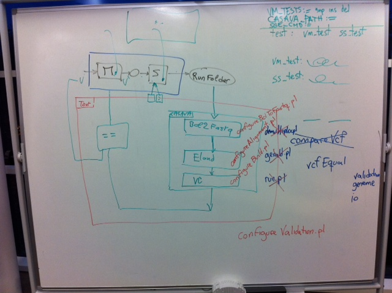

Introduction
The EAGLE System Testing Framework is initially developed as a system level validation framework for the EAGLE tools.
It will later be adapted for the validation of external tools.
Aims
Its first aim is to test the validity of EAGLE's outputs by running CASAVA on them, checking that nothing crashes, and checking that obvious variants are detected (hence correctly generated).
As part of our test-driven development, this system testing framework is actually developed before the main EAGLE tools.
Ideas
By generating some outputs that are extremely easy to align, we can assume that external tools such as CASAVA should align and call all the variants without making any mistake. Checking those variants against the ones provided as inputs of EAGLE should prove that EAGLE generated valid data.
The next stage should add more complexity in the variants, their detection and the analysis of the errors.
Architecture

Implementation
Implemented by "make test" in <EAGLE install>/validation/test* directory.
It runs CASAVA on a set of validation tests.
Validation tests
The tests are intended to validate the various features of the simulator by going through the full flow.
It is useful (and important) to run these tests at the system level, as it allows us to validate that the combination of output files are in formats readable by CASAVA (or whatever post-run tools we decide to use).
Test # |
Description |
Validation check |
Current results |
|---|---|---|---|
1-100 |
Generic test on a small example: reference genome = PhiX (or Enterobacteriophage) |
|
|
1 |
non-circular, 30x coverage, 1 lane, 1 tile, 1 read of 101 bases, no barcode, no variants |
|
passed |
2 |
Test 1 + 2 lanes, 2 tiles/lane |
|
passed |
3 |
Test 1 + 2 reads of 101 bases |
|
passed |
4 |
Test 3 + barcode of 7 bases between the 2 reads |
|
passed |
5 |
Test 4 + 8 lanes, 32 tiles/lane |
|
passed |
6 |
Test 5 + 1 SNP, 1 small insertion, 1 small deletion, 1 large deletion (=translocation on same chromosome).(large insertion removed, as it wasn't detected properly) |
|
passed |
7 |
Test 5 + a variant at the beginning/end of the chromosome, where it is expected that the coverage will be too low for proper detection |
Check that the variant doesn't get detected, or that the coverage is expectedly low at the chromosome ends |
passed |
8 |
Test 7 + circular chromosome |
Check that the coverage at the chromosome ends is at 30x, and that the variant now gets detected |
passed |
9 |
Test 8 with 1 lane and 1 tile/lane, single read, no barcode |
Check that flow still runs and variants still get detected |
passed |
10 |
Test 8 with different tile naming scheme |
Check tile names, and check that variants still get detected by post-processing tools |
not implemented |
11 |
Test 8 with 2 reads: 31+151 bases |
|
not implemented |
|
Test paired read / mate pairs difference |
|
not implemented |
|
Test barcodes |
|
|
|
Test adapters and sequencing primers sequences |
|
|
|
|
|
|
Test # |
Description |
Validation check |
|---|---|---|
Mux1-... |
Multiplexed tests |
|
Mux1 |
|
|
|
|
|
Test # |
Description |
Validation check |
|---|---|---|
Human1 |
Generic test with no variants on human reference genome |
|
Human2 |
Translocations from Stephens, et al. |
|
Human3 |
Human1 test restricted to chr21 |
|
{kind=link}